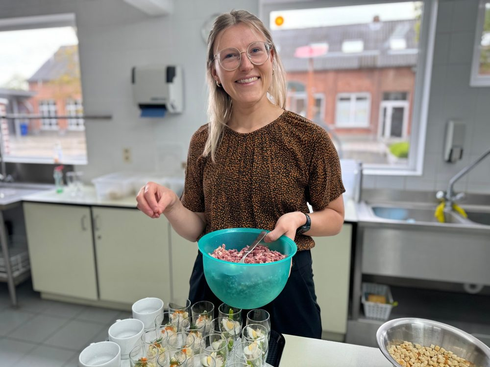
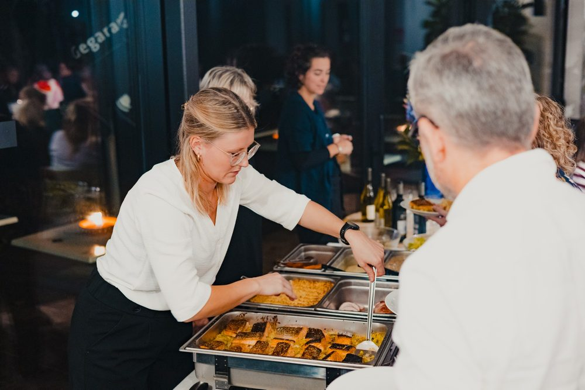
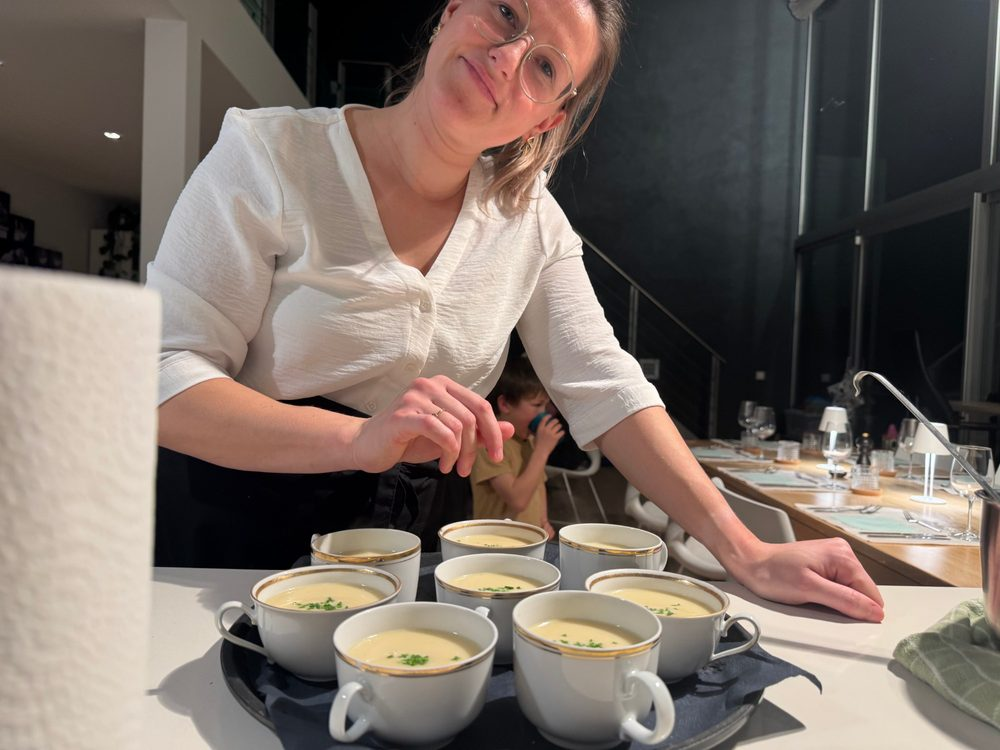

Benieuwd waar de naam Tersagoesting vandaan komt? Wie het koppel is achter deze cateraar uit Puurs-Sint-Amands, en waarom ze zo zot zijn van koken? In dit interview krijg je een antwoord op al je vragen.
Tersagoesting, waar komt die naam vandaan?
Leni: “Tersagoesting als naam is gebaseerd op mijn achternaam ‘Tersago’ met daaraan woordje ‘goesting’ geplakt. De betekenis spreekt voor zich. Al van mijn 13e ben ik zot van koken. Thuis greep ik elke kans om voor mijn gezin een lekker potje klaar te maken.”
“Ik las kookboeken, keek af bij mijn grootmoeders en zo leerde ik snel bij. Vol-au-vent, stoofvlees, spaghetti: de typische klassiekers had ik snel onder de knie. Het allerbelangrijkste als je begint te koken? Een bouillon kunnen trekken. Dat vormt de basis van zoveel lekkere gerechten en sauzen.”

Van hobbykok naar cateraar: hoe kwam die stap er?
Leni: “Goh, ik speelde al lang met dat idee, maar ik had nog een duwtje in de rug nodig. In 2022 hield ik een soort test door soep te maken voor het goede doel. Daar kreeg ik heel wat reactie op, ik verkocht wel 70 liter pompoensoep. Dat moest het opstapje zijn naar het starten met een eigen catering, maar ik twijfelde nog. Mijn man Wout moedigde me aan om toch te beginnen. De rest is geschiedenis.”
Jullie aanbod is intussen flink geëvolueerd.
Leni: “Ja, eerst was het idee om dicht bij die klassieke, Vlaamse keuken te blijven en vooral op bestelling te werken. Liters sauzen, soepen, stoofpotjes: daar zag ik mijn sterkte. Maar we werden al snel gevraagd om op feestjes hapjes, dessert en andere gerechten te komen serveren. Op korte tijd zijn we dan overgeschakeld van afhaaltraiteur naar echte catering. Afhaal doen we nu eigenlijk niet meer, tenzij als het om koude schotels gaat. Die evolutie loopt nog door.”
Vandaag verzorgt Tersagoesting zowat elk feest, groot of klein. Een greep uit ons aanbod:
- Hapjes bij de borrel en borrelplanken
- Walking dinner
- De Pasta-, Burger- en BBQ-formule
- Koude en warme buffetten
- Cook@Home: een chef aan huis die ter plaatse kookt
- Bediening en dessert op maat
Van recepties en communie- of verjaardagsfeestjes tot diners en bedrijfsevenementen.

Met welke leveranciers werken jullie?
Leni: “We proberen zoveel mogelijk lokaal te kopen. Onze groenten kopen we bij De Coninck in Liezele, ons vlees bij Winckelmans in Lippelo en Wim&Chris in Kalfort en voor onze vis kiezen we voor een van de lokale viswinkels in de buurt. Een deel van onze groenten komt ook uit de moestuin van mijn ouders.”
Hebben jullie specialiteiten?
Leni: “Ons traaggegaard buikspek, in verschillende vormen, is iets waar we vaak complimenten over krijgen. Voor sommige klanten is het de reden dat ze ons terug vragen voor een feestje. Ook onze tartaarsaus past thuis in dat rijtje. Net als onze verse pasta’s, pastabekers en lasagnes.”
Wat maakt voor jullie een feest geslaagd?
Leni: “Dat mensen verrast, blij en relaxed zijn. Die drie dingen zijn belangrijk. We willen mensen echt verwennen met onze kookkunsten. Soms in de vorm van een verfijnd bordje zelfgemaakte ravioli, maar evengoed durven wij uitpakken met onze lekkere hamburgers. Simpel hoeft niet minderwaardig te zijn. De rode draad is versheid en ambacht: we maken zoveel mogelijk zelf. Van de sauzen tot de verse pasta, ingelegde uitjes, vleesbereidingen, en zo veel meer.”
“Je verwacht het niet, maar de feedback die we vaak horen, is hoe blij mensen zijn dat hun keuken achteraf proper is. Niet hoeven zwoegen boven de gootsteen is bijna even belangrijk als het eten, lijkt het soms. Maar gemak is nu eenmaal goud waard in tijden waarin iedereen zo druk-druk bezig is.”
De rode draad is versheid en ambacht: we maken zoveel mogelijk zelf.
Jullie zijn met z’n twee: hoe zit de rolverdeling?
Leni: “Wout kwam erbij om achter de schermen mee na te denken over de gerechten. Hij was zelf ook een hobbykok, maar vond wat vlotter zijn weg in de Italiaanse en de Aziatische keukens. Vandaag staat hij meestal in de keuken als chef, en ben ik het aanspreekpunt bij mensen thuis of in de zaal. Het fijnere werk, het dresseren op borden en schotels, laat hij ook aan mij over. Omgekeerd zal je Wout eerder met zware dozen zien sleuren.”

Elk weekend samen werken, hoe is dat?
Leni: “Het is geweldig om als koppel onze passie voor eten samen te beleven. Als we op restaurant gaan, kunnen we het niet laten om lekkere gerechtjes te analyseren, om te stelen met onze ogen. Na een opdracht kunnen we uren praten over hoe de avond verliep, wat we in de toekomst misschien nog kunnen toevoegen aan de Tersagoesting-belevenis, noem maar op.”
“We eten niet om te leven, maar wij eten om te leven. Dat we de recepties, communie- of verjaardagsfeestjes, diners en evenementen mogen voorzien van verwenmomentjes, is echt een droom die voor ons uitkomt.”
Goesting gekregen?
Wil je dat Leni en Wout ook jouw feest verzorgen? Vraag vrijblijvend je offerte aan, je zit nergens aan vast.
Vraag je offerte →
Volg ons voor meer foto's en filmpjes
Zo blijf je op de hoogte van onze acties en krijg je een blik achter de schermen
@tersagoesting
Volg ons op Instagram →